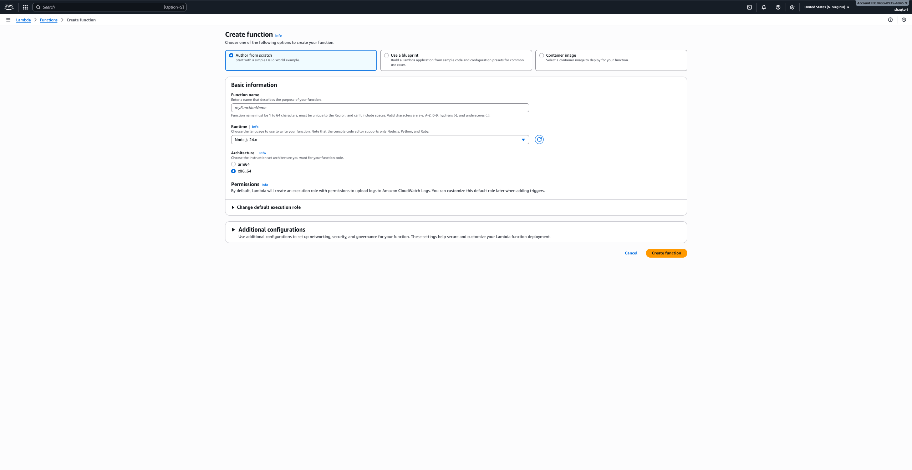
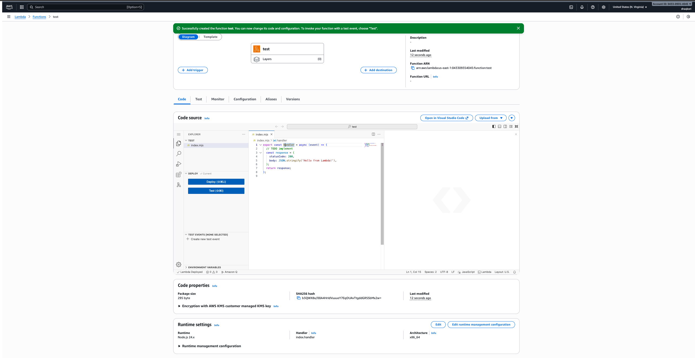
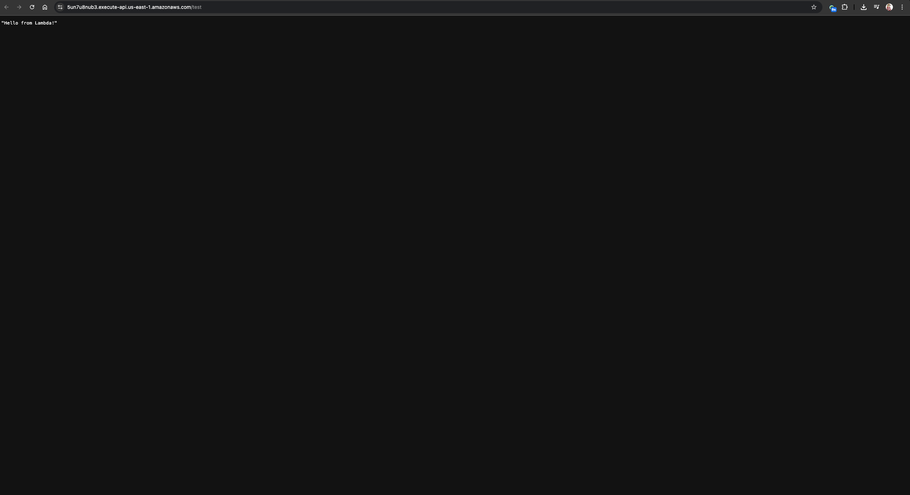

Build a Serverless REST API
Learn how to build a fully serverless API using AWS Lambda and API Gateway.
Step 1 — Create a Lambda Function
Open the AWS Lambda console and create a function using Node.js or Python.
Step 2 — Write Your API Logic
// Example Node.js Lambda
exports.handler = async (event) => {
return {
statusCode: 200,
body: JSON.stringify({ message: "Hello from Lambda!" })
};
};
Step 3 — Create an API Gateway
Connect your Lambda to an HTTP API route (e.g., GET /hello).
Step 4 — Deploy the API
Deploy your API and copy the Invoke URL.

Step 5 — Test in Your Browser
Visit the URL and see your API response.
